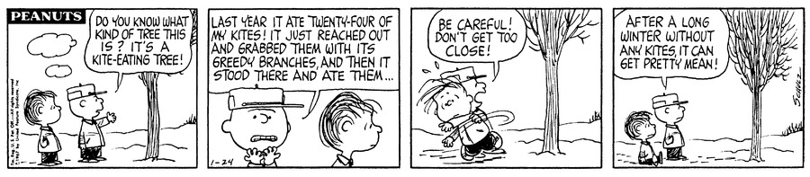
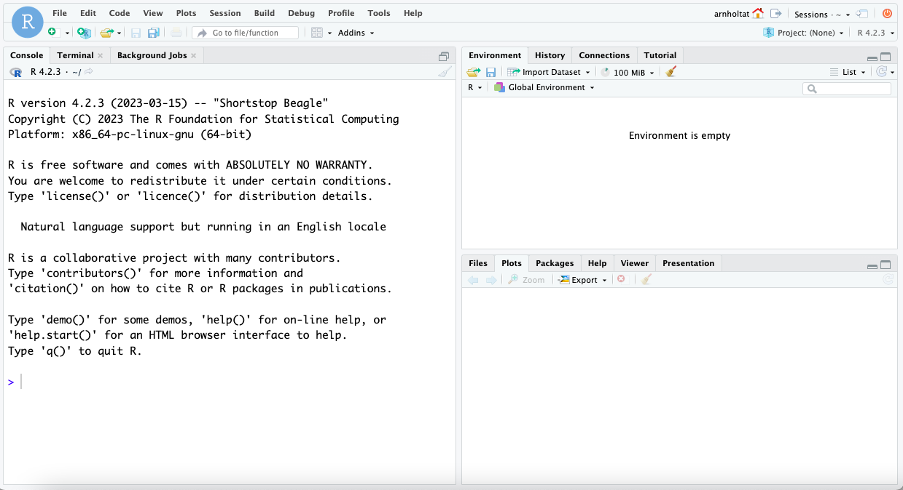
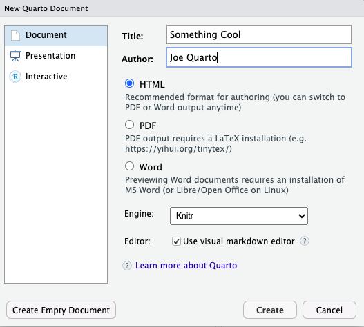
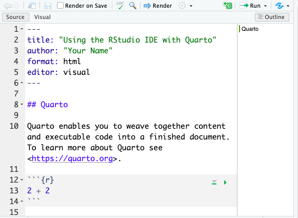
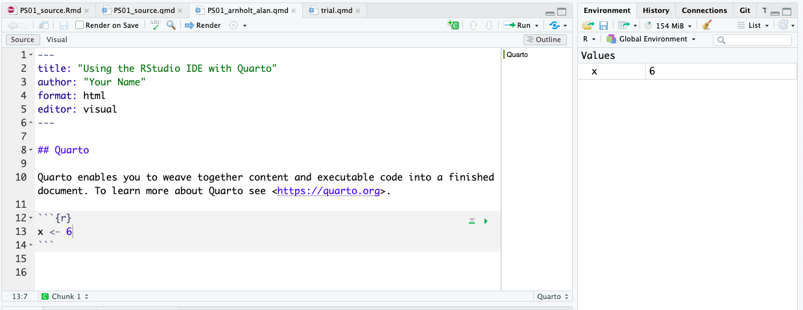

Problem Set 01: Intro to R and RStudio
The goal this week is to introduce R and RStudio which will be used throughout the course both to review the statistical concepts discussed in the course and to analyze real data and come to informed conclusions. To clarify which is which: R is the name of the programming language itself, and RStudio is an integrated development editor (IDE).
age <- c(20, 22, 23, 20, 21, 23, 21, 19, 19, 20, 20, 20, 21, 80, 19, 19)The average age is 24.1875.
Today, we begin with the fundamental building blocks of R and RStudio: the interface, creating and saving files, and basic commands.
Opening RStudio Server
Open Appalachian’s RStudio Server and sign in: RStudio Server
Your credentials are the same ones you use to log into your ASU email account.
Please DO NOT choose Stay signed in.
The RStudio Interface
In the RStudio Server, you should see a window that looks like the image in Figure 1.

The panel on the left is where the action happens. It’s called the console. Every time RStudio is launched, it will have the same text at the top of the console describing the version of R that is running.
The panel in the upper right contains the workspace. This shows the variables and objects defined during an R session and a history of the commands that are entered.
Any plots that are generated will show up in the panel in the lower right corner. This is also where you can browse your files, access help files, and upload and download files.
Using Quarto Files
At its core, Quarto works the same way as R Markdown:
flowchart LR A[qmd] --> B(knitr) B --> C[md] C --> D(pandoc) D --> E[HTML] D --> F[PDF] D --> G[MS Word]
Quarto combines the functionality of R Markdown, bookdown, distill, xaringian, etc. into a single consistent system. Quarto is at its core multi-language and multi-engine (supporting Knitr, Jupyter, and Observable today and potentially other engines tomorrow).
Opening a New File
Quarto documents can be used in R or python. For this course, we will use R and the RStudio IDE to work with Quarto documents. Quarto documents are useful for both running code and annotating the code with comments. The documents can be saved, so you can refer back to your code later. Quarto documents can also be used to generate other document types (HTML, PDF, MS Word, Open Office, or ePub) for presenting the results of your analyses in formats that may be required in other contexts.
To open a new Quarto document, click on the little green plus beside the circled R in the upper left hand area of the RStudio IDE as seen in Figure 1 and select Quarto Document.... Enter a title and author in the corresponding boxes; then, click create. See Figure 2 for an example where the document title is Something Cool and the author is Joe Quarto.

When you open a new Quarto document, there is some example code (template) in it that you might delete.
Saving a File
Lab work will be saved as Quarto files that will be committed and pushed to the class repository. Therefore, it is important to learn how to save these files. To save the Quarto template:
- Click File > Save As…
- Name the file:
PS01_YourLastName_YourFirstName(mine would bePS01_Arnholt_Alan.qmd).
Warning
The PS01_YourLastName_YourFirstName.qmd file is just for your own practice. The file you will save, commit, and push to the class repository is the file you are reading (PS01_source.qmd). You will make changes to this file starting in Section 6 (Practice on Your Own).
- Click save. The
PS01_YourLastName_YourFirstName.qmdis now saved in theMD-PS01-SCdirectory on the server.
Make Changes to a File
Let’s make some changes to the Quarto document you just created using Figure 3 as a guide.
First, change the title of the document to Using the RStudio IDE with Quarto. Be sure to surround the title with quotation marks.
Second, add your name to the author field, making sure to include your name inside quotation marks.
Third, click on
Sourcein the upper left of the*.qmdsource’s panel so that line numbers appear on the far left.Fourth, delete lines 12 through 27.
Finally, insert what is called a “code chunk.” To do this, click on the green +C (insert a new code chunk) button near the top right of the
*.qmdsource’s panel.Rcode is entered on the blank line inside theRcode chunk.
Your final result should look similar to Figure 3.

Rendering a File
Click the \(\Rightarrow\) Render button at the top left side of the screen to “render” the file, or in other words, produce a formatted document. An *.html file will be generated. The *.html file is automatically saved in the same folder as your Quarto file.
Note that there are now a Quarto file (PS01_YourLastName_YourFirstName.qmd) and an html file (PS01_lastname_firstname.html) in the MD-PS01-SC folder in addition to the files you downloaded.
Inspect the *.html file to see how what you typed was formatted. There are lots of tricks for controlling the formatting of the rendered html file. For instance:
- putting
##and a space in front of text makes it into a large header. For example, see how## This is a headerin your Quarto*.qmdfile translates in the resulting*.htmloutput. - putting
###and a space in front of text makes it a smaller header.
Entering and Running Commands
The code chunks are where you put R code in Quarto file. So far, your “rendered” file (your formatted document file) doesn’t show anything because we did not put any content in the code chunks yet.
Using your first code chunk, type the following command to create a new variable called x with the value of 6.
x <- 6The arrow <- is called an assignment operator and tells R to save an object called x that has the value of 6. This is similar to saving a value in a graphing calculator.
Tip
Note that whatever you want to save must always be to the left of the assignment operator (<-).
To run this command in your console, you have a few options:
- Click on the green triangle in the first line of the code chunk that points to the right.
- Highlight the code and hit
Control-Enteron a PC orCommand-Returnon a Mac.
Think of “running” code in your console as telling R “do this.”
Note that you now have a new object in your workspace, called x.

Data Types\(-\)a Brief Intro
So far, you have made a numeric variable x. There many other types of data objects you can make in R. In this section, we create different types of objects.
To make a character object called favorite_movie copy, paste, and run the following code in a new code chunk. Think of characters as text as opposed to numerical values. Note that R knows this is a character because there are quotation marks around Star_Wars.
favorite_movie <- "Star_Wars"Next, copy, paste, and run the following command in a new code chunk.
v <- c(2, 4, 6)This makes what is called a vector, which we have named v. It is a data object that has multiple elements of the same type. This vector contains three numbers: 2, 4, and 6. The c() function says tells R to concatenate the values 2, 4, 6, into a single vector. Note in the Environment pane that your vector v contains numbers (listed as num).
You can do math on a vector that contains numbers. For instance, copy, paste, and run the following command in a new code chunk. This tells R to multiply each element of the vector v by 3.
v * 3Practice on Your Own
Directions
Type complete sentences to answer all questions in the Quarto document. Round all numeric answers you report to four decimal places. Use inline R code to report all numeric answers (i.e. do not hard code your numeric answers).
Remember to save your work as you go along. Click the floppy disk (save current document) button in the upper left hand corner of the Quarto source panel.
Tip
It is a good idea to render your document from time to time as you make changes and updates to your work. Go ahead, and make sure your document is rendered and that your html file includes Exercise headers, text, and code. Note that rendering automatically saves your *.qmd file.
Italicize like this
Bold like this
A superscript: R2
Turning in Your Work
You will need to make sure you commit and push all of your changes to the github education repository where you obtained the lab.
Tip
- Make sure you render a final copy with all your changes and work.
- Look at your final html file to make sure it contains the work you expect and is formatted properly.
Logging out of the Server
There are many statistics classes and students using the Server. To keep the server running as fast as possible, it is best to sign out when you are done. To do so, follow all the same steps for closing Quarto document:
Tip
- Save all your work.
- Click on the orange button in the far right corner of the screen to quit
R - Choose don’t save for the Workspace image
- When the browser refreshes, you can click on the sign out next to your name in the top right.
- You are signed out.

sessionInfo()R version 4.2.3 (2023-03-15)
Platform: x86_64-pc-linux-gnu (64-bit)
Running under: Red Hat Enterprise Linux 9.2 (Plow)
Matrix products: default
BLAS/LAPACK: /usr/lib64/libopenblasp-r0.3.21.so
locale:
[1] LC_CTYPE=en_US.UTF-8 LC_NUMERIC=C
[3] LC_TIME=en_US.UTF-8 LC_COLLATE=en_US.UTF-8
[5] LC_MONETARY=en_US.UTF-8 LC_MESSAGES=en_US.UTF-8
[7] LC_PAPER=en_US.UTF-8 LC_NAME=C
[9] LC_ADDRESS=C LC_TELEPHONE=C
[11] LC_MEASUREMENT=en_US.UTF-8 LC_IDENTIFICATION=C
attached base packages:
[1] stats graphics grDevices utils datasets methods base
other attached packages:
[1] knitr_1.43
loaded via a namespace (and not attached):
[1] htmlwidgets_1.6.2 compiler_4.2.2 fastmap_1.1.1 cli_3.6.1
[5] tools_4.2.2 htmltools_0.5.6 rstudioapi_0.15.0 yaml_2.3.7
[9] rmarkdown_2.24 jpeg_0.1-10 jsonlite_1.8.7 xfun_0.40
[13] digest_0.6.33 rlang_1.1.1 png_0.1-8 evaluate_0.21